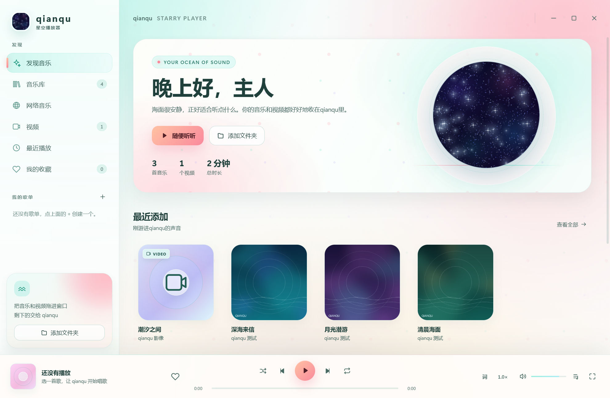
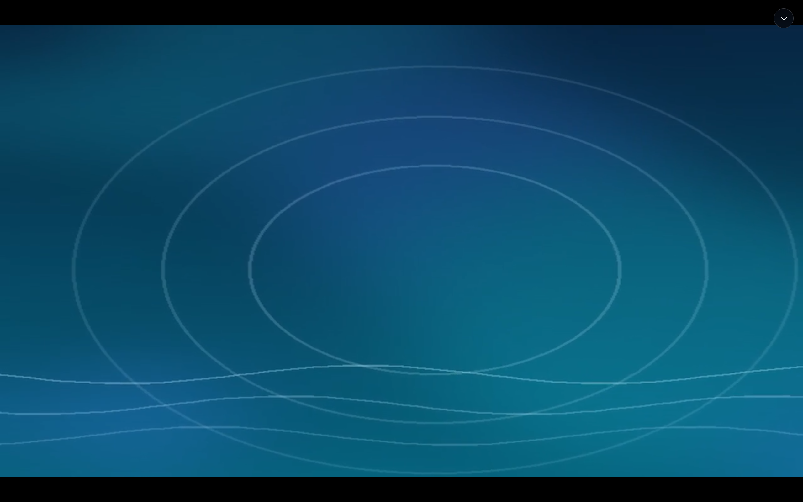

♪
本地音乐与视频
MP3 / FLAC / WAV / M4A / OGG / Opus，以及 MP4 / WebM / MOV；自动读取元数据和内嵌封面。
星空播放器
把本地音乐、视频、B 站收藏夹与订阅合集、网易云 / QQ 音乐 / 酷狗放进同一个安静界面。 图标是一片纯星野，没有星座连线。

本地、B 站、网易云、QQ、酷狗共用播放队列、歌单、收藏和歌词。
MP3 / FLAC / WAV / M4A / OGG / Opus，以及 MP4 / WebM / MOV；自动读取元数据和内嵌封面。
播放页全屏按钮或双击视频进入，铺满整个窗口；Esc 退出影院，不关闭播放页。
搜索、热歌榜、新歌、收藏夹、订阅合集；导入后可以一键更新，保留手动歌单名。
Bilibili、网易云、QQ 音乐、酷狗；支持官方登录、账号歌单和公开歌单链接导入。
本地 LRC、内嵌歌词、B 站字幕校验、网易云 / QQ 候选；支持偏移和逐句对齐。
不修改本地文件，不上传音频；所有界面和逻辑都在仓库里，直接改、直接打包。
首页、网络音乐、沉浸歌词、视频影院。

视频影院 · 铺满窗口